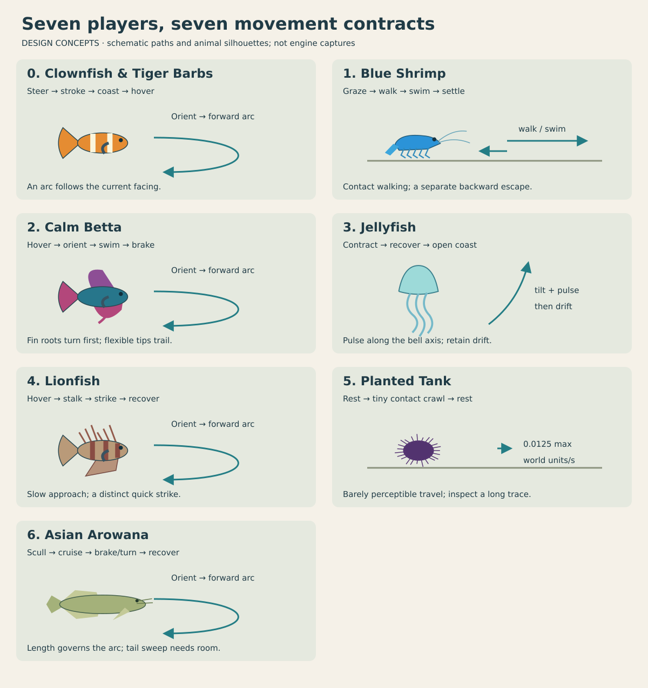
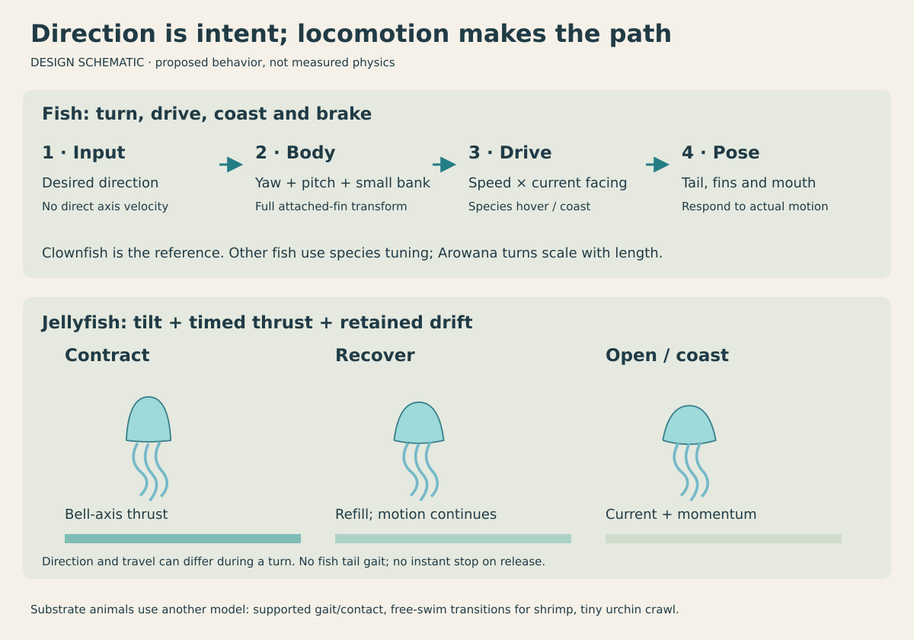
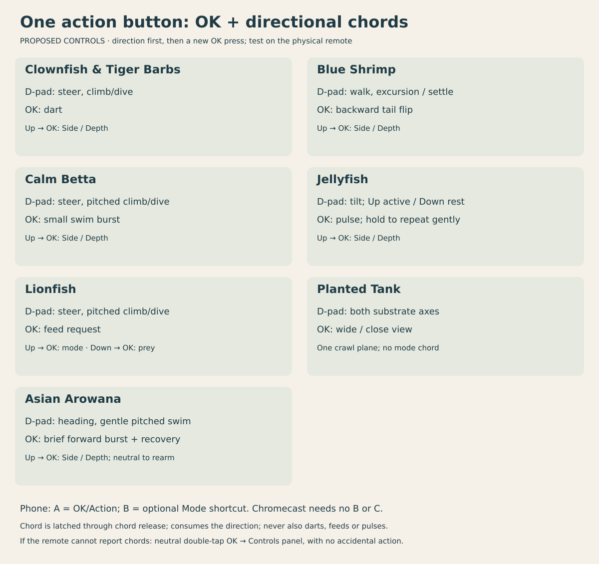

PLAN VISUALS · ORIGINAL SCHEMATICS · GAME PROPOSALS
Movement and controls for all seven players
Fish turn before following a new direction. Jellyfish pulse, recover and drift. Shrimp switch between supported and swimming gaits; the sea urchin barely crawls. These concepts are not a running engine or a newly implemented fish mesh.
Player / tank selector
Jellyfish: examine one proposed stroke
The slider shows the draft 20% contraction, 30% recovery and 50% open interval. These are game choices, not fitted animal data. A thrust arrow is distinct from retained travel; this picture does not calculate fluid forces.
Motion contracts and pipelines


D-pad + one OK button
Up held before OK changes Side/Depth mode. In Lionfish, Down held before OK releases prey. OK alone performs the current animal's action. The urchin uses one floor plane and OK changes view. Phone B is an optional shortcut.
